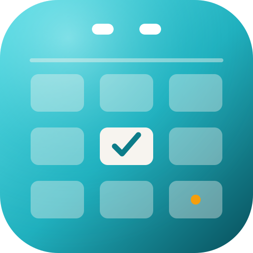
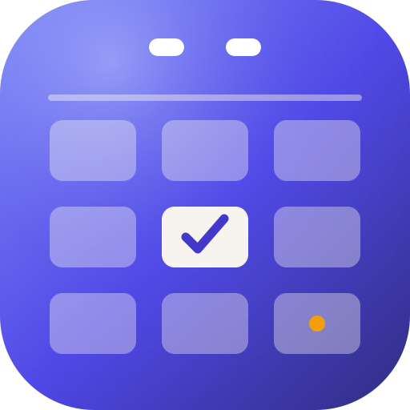
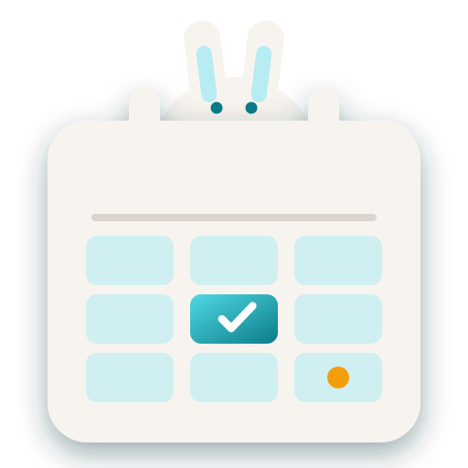

La misma actualización que SuperNotes 0.4.1: que el arte llene el icono. Tres caminos — la hoja a sangre completa, el conejo blanco asomado tras la hoja y el pájaro madrugador en la primera línea — todos conservando las señales de calendario (anillas, cuadrícula, hoy marcado y punto ámbar del evento). Y una pregunta de color: aguamarina (la app hoy) o índigo (como propone la hoja de identidad, para diferenciarse de SuperNotes).
PROPUESTA 01 · PÁGINA A SANGRE
La agenda llena el icono
Sin marco · el icono es la marca ampliada

Aguamarina

Variante índigo
7244281872442818
Barra lateral oscura · splashAnillas recortadas de verdad, como el doblez de SuperNotes
Agujeros de anillas transparentes, hoy en marfil con check y punto ámbar del evento.
Como SuperNotes 0.4.1: sin marco; a 16 px sigue leyéndose «calendario».
PROPUESTA 02 · CONEJO ASOMADO
Nunca llegas tarde
El conejo blanco de Alicia, tras la hoja
Con marco

Sin marco (nuevo)
72 marco44 marco72 sin marco44 sin marco
Barra lateral oscura · splashOrejas por encima de las anillas: silueta única
«¡Llego tarde!»: el conejo del tiempo; contigo, nunca.
Los fondos vintage de la app ya tienen conejos (assets/art): la mascota ya vive aquí.
La escena actual no cambia: solo el conejo se asoma entre las anillas.
PROPUESTA 03 · PÁJARO MADRUGADOR
El que madruga
Posado en la primera línea · a sangre completa
Aguamarina
72442818
Barra lateral oscura · splashLa primera línea es la rama; el pico es el ámbar del evento
El pájaro madrugador planea tu día desde la primera línea.
Los fondos vintage también tienen aves: coherente con la app.
Con o sin marco combina: aquí se muestra a sangre, como la 01.
En contexto · todos juntos
ActualPágina a sangreConejo asomadoConejo sin marco (nuevo)Pájaro madrugadorPágina índigo
16 px realActualPáginaConejoConejo sin marcoPájaroÍndigo
Aguamarina · la app hoyÍndigo · hoja de identidad
Qué se mantiene · qué cambia
Se mantiene: paleta aguamarina/ámbar (o índigo), anillas, cuadrícula, casilla de hoy con check y punto de evento.
Cambia: el marco (01 y 03 lo quitan, como SuperNotes 0.4.1) o la escena superior (02 añade al conejo).
Color: la app usa aguamarina por defecto; la hoja de identidad propone índigo para diferenciarse de SuperNotes. El índigo también es el color por defecto de los calendarios nuevos.
Elegida una, se copia a assets/app-icon.svg y npm run icons regenera todos los PNG/ICO/ICNS.
 Actual
Actual Pájaro
Pájaro